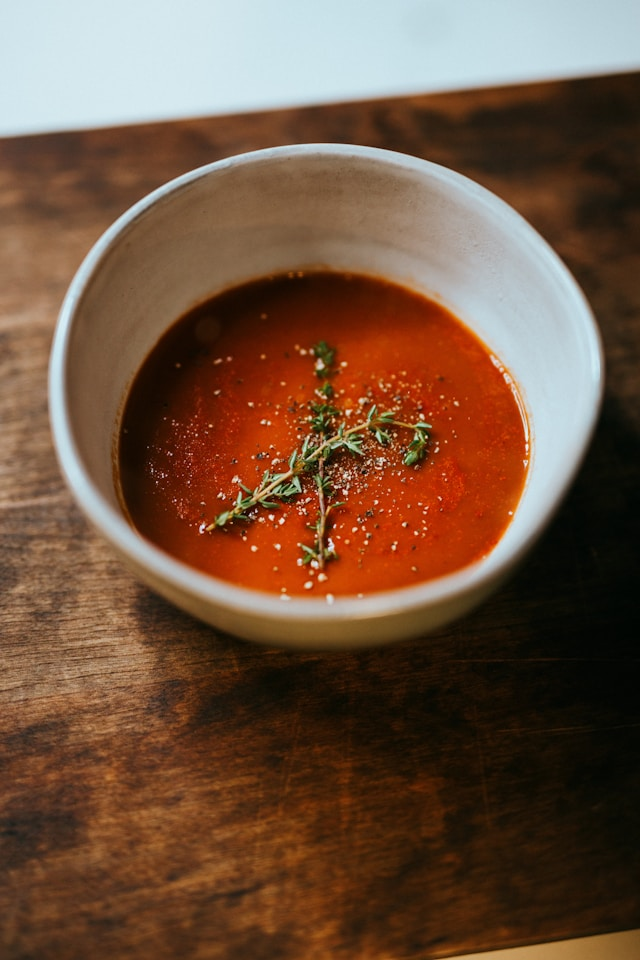

Butternut Squash Chili

Description
If you love chili, add this butternut squash chili to your repertoire. It feels like fall, and has great flavor without being too spicy.
It's also a great way to add squash to your menu.
Ingredients
- olive oil
- yellow onion
- tomato paste
- garlic
- vegetable broth
- green bell pepper
- butternut squash
- diced tomatoes
- fire-roasted diced tomatoes
- brown sugar
- chili powder
- ground cumin
- crushed red pepper
- canned black beans
- ground turkey or chicken
- salt and pepper
Steps
- Cook the onion and tomato paste in oil, then stir in the garlic.
- Add the broth, bell pepper, squash, and tomatoes. Stir in the sugar, chili powder, cumin, and red pepper flakes. Simmer until the squash is tender.
- Add beans and ground meat (if using). Cover and simmer, then season.
- Top with your desired toppings.
Home